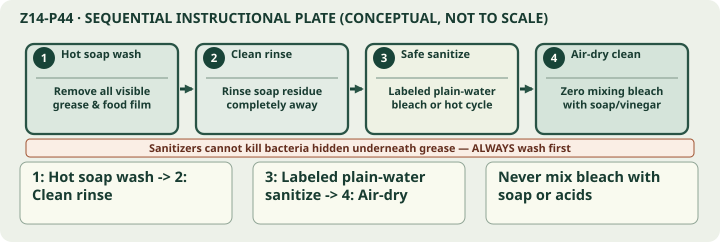

Z14-P44 · Food production and preservation · New manuscript
Wash and sanitize kitchen counters, boards, and canning tools properly
Remove food soil first and apply safe food-contact sanitizing dilutions without leaving toxic chemical residues.
When it applies · Kitchen prep stations, home canning/fermenting workspaces, and post-outage refrigerator cleaning.
Equipment · Hot soapy water, clean cloths/brushes, labeled food-contact unscented bleach dilution (per official label) or dishwasher sanitize cycle, and air-dry rack.

Actions
- Follow the mandatory two-step sequence: WASH FIRST with hot soapy water and rinse thoroughly to remove visible grease, soil, and organic films (sanitizers cannot kill germs buried inside dirt), THEN SANITIZE clean food-contact surfaces with a labeled food-contact sanitizing dilution or hot dishwasher sanitize cycle.[F01, P16]
- Mix food-contact chlorine bleach solutions strictly with plain cool water per current manufacturer/CDC/Extension label directions (never eyeballing glugs, never mixing with soap/ammonia/vinegar) and let sanitized surfaces air-dry cleanly.[P16, U13]
- Replace worn, deeply scarred plastic or wooden cutting boards that trap bacteria in knife grooves, and wash kitchen sponges/dishcloths frequently in hot cycles or swap to clean paper towels for raw-meat spills.[F01, P16]
Failure recognition · Spraying strong undiluted bleach over greasy meat-juice residue without washing first, leaving both dirty film and harsh chemical residue.[F01, P16, U13]
Verify · Confirm wash-rinse-sanitize-air-dry order followed, exact plain-water dilution used, and zero soap/ammonia/acid mixed with bleach.[P16, U13]
Stop or change course · Damaged porous cutting boards or cloudy mixed chemical solutions must be discarded cleanly before food prep continues.[P16, U13]
Evidence and editorial notes
- F01 · USDA / FDA / CDC · Four Steps to Food Safety (current web edition)
- Section: Clean and Separate · Conditions: Food preparation with safe water and surfaces
Support: Wash hands and separate raw animal foods and juices from ready-to-eat food.
Limitations: Requires safe water or approved hand hygiene substitutes in outages. · Conflicting evidence: None; retained for food safety pack completeness.
Editorial note: Maintains five-pack integrity. · Specialist reviewer: Food safety and public health
Primary source · checked 2026-11-24 - P16 · USDA / FDA / CDC · Four Steps to Food Safety (current web edition)
- Section: Clean, Separate, Cook, Chill > Produce Washing and Cross-Contamination · Conditions: Garden-to-kitchen harvesting, food prep, and preservation workspaces
Support: Wash hands 20 seconds with soap and safe water, scrub firm produce under running safe water before peeling/cutting, keep raw animal foods strictly separate from ready-to-eat produce, and sanitize prep surfaces and utensils between tasks.
Limitations: Washing produce with soap, detergent, or bleach is unsafe and not recommended. · Conflicting evidence: None; extends F01–F03 into garden harvest and home preservation.
Editorial note: Anchors kitchen sanitation and cross-contamination barriers in Z14. · Specialist reviewer: Food safety and public health
Primary source · checked 2026-11-24
Current assessment · A04-P16 (2026-11-25) · Bounded support newly confirmed (A04): Verified handling sequence for food preparation using safe water. No advice here for a water emergency or decontaminating a specific product. Limits: Specialist review PENDING (Food safety and public health); publication HOLD. All release decisions pending. - U13 · CDC · How to Make Water Safe in an Emergency (2024-09-19)
- Section: Sanitation, Hand Hygiene, and Emergency Waste Containment · Conditions: Household water-service or sewer interruption
Support: Maintain separate handwashing stations using safe water and soap (or alcohol hand rub when hands are not visibly soiled), line emergency bucket toilets with heavy bags and tight lids when sewer service is unusable, and never mix bleach with ammonia or acids.
Limitations: Improvised sanitation is a temporary containment bridge until municipal sewer or licensed sanitation resumes; follow local health department disposal orders. · Conflicting evidence: None; prevents fecal-oral outbreaks and toxic chloramine gas mixing.
Editorial note: Core household sanitation and chemical-mixing boundary in Z13. · Specialist reviewer: Environmental health and sanitation specialist
Primary source · checked 2026-11-24
Current assessment · A04-U13 (2026-11-25) · Open: support partial or missing (A04): The original water section cannot qualify bucket toilets or all chemical conditions. Water/hygiene and sanitation/chemical controls need partial separation and local sanitation review. Limits: Specialist review PENDING (Environmental health and sanitation specialist); publication HOLD. All release decisions pending.
Current assessment · W2C-E035 (2026-11-28) · Narrowed: later guidance limits this claim: Alcohol rub is a fallback only when soap and water are unavailable; it does not replace handwashing after toilet, diaper or vomit tasks or before food. Limits: The baseline U13 text is kept for history; cards now cite U26 and U27 for the hand-hygiene boundary.
Source lineage · USDA/FDA/CDC FoodSafety.gov; new manuscript · Classification · New manuscript.